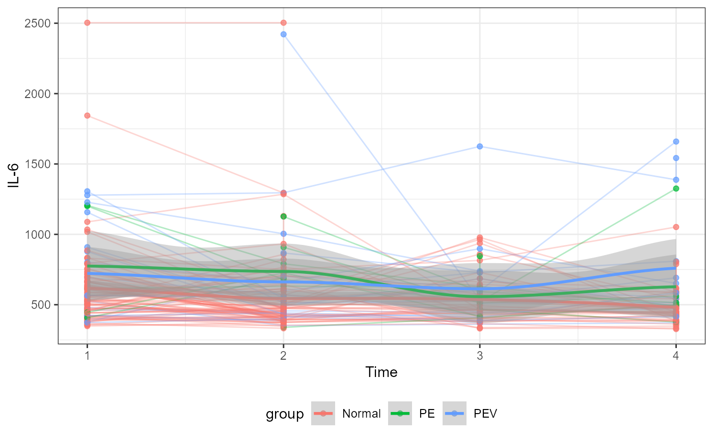
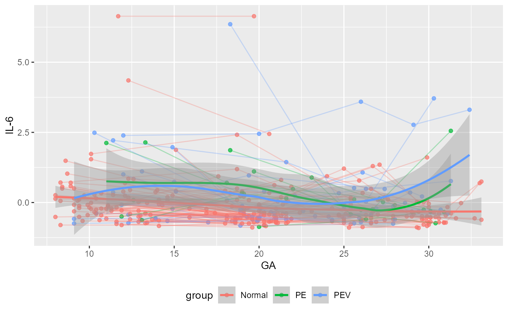

Plot participants
plotParts.RdThis function returns the scores for an RMASCA model
plotParts( object, variable = NA, participantColumn = FALSE, valueColumn = FALSE, timeColumn = "time", addSmooth = "loess" )
Arguments
| object | An RMASCA object or a data frame. If a data frame, you need to specify the column names for participant and value. This also applies if you have not specified the participant column in the RMASCA model before. |
|---|---|
| variable | List of variable names to print. If |
| participantColumn | Specify the column with participant identifier. Not necessary if you have already provided it to the RMASCA object |
| valueColumn | Specify column with values (y axis). Not necessary to provide if you are plotting an RMASCA object. |
| timeColumn | Specify column with times (x axis). Defaults to |
| addSmooth. | Specify which geom_smooth model you want to apply, eg. |
Value
A list with ggplot2 objects.
Examples
#> [[1]]#>#> Warning: pseudoinverse used at 0.985#> Warning: neighborhood radius 2.015#> Warning: reciprocal condition number 8.7885e-016#> Warning: There are other near singularities as well. 1#> Warning: pseudoinverse used at 0.985#> Warning: neighborhood radius 2.015#> Warning: reciprocal condition number 8.7885e-016#> Warning: There are other near singularities as well. 1#> Warning: pseudoinverse used at 0.985#> Warning: neighborhood radius 2.015#> Warning: reciprocal condition number 5.7519e-017#> Warning: There are other near singularities as well. 4.0602#> Warning: pseudoinverse used at 0.985#> Warning: neighborhood radius 2.015#> Warning: reciprocal condition number 5.7519e-017#> Warning: There are other near singularities as well. 4.0602#> Warning: pseudoinverse used at 0.985#> Warning: neighborhood radius 2.015#> Warning: reciprocal condition number 7.3609e-017#> Warning: There are other near singularities as well. 4.0602#> Warning: pseudoinverse used at 0.985#> Warning: neighborhood radius 2.015#> Warning: reciprocal condition number 7.3609e-017#> Warning: There are other near singularities as well. 4.0602#>do.call( ggpubr::ggarrange, c(plotParts(df, participantColumn = "ID", timeColumn = "GA", valueColumn = "value", addSmooth = NA, variable = c("PlGF", "IL-6", "IL-1b", "IFN-g", "Eotaxin-2", "Eotaxin")), common.legend = TRUE, legend = "bottom") )plotParts(model, variable = "IL-6", participantColumn = "ID", timeColumn = "GA")[[1]] + ggplot2::labs(x = "GA")#>